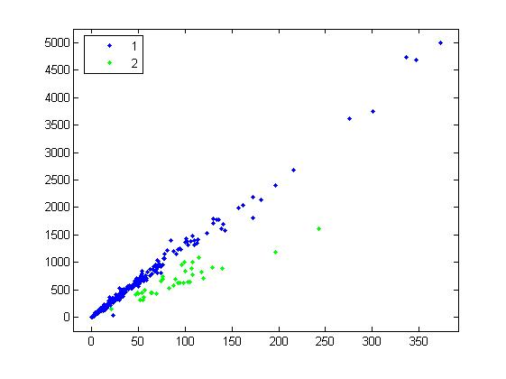
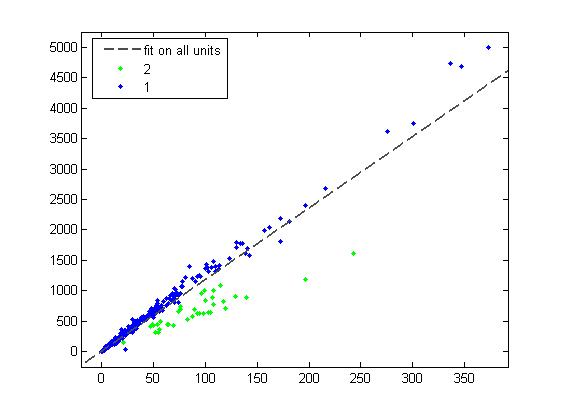
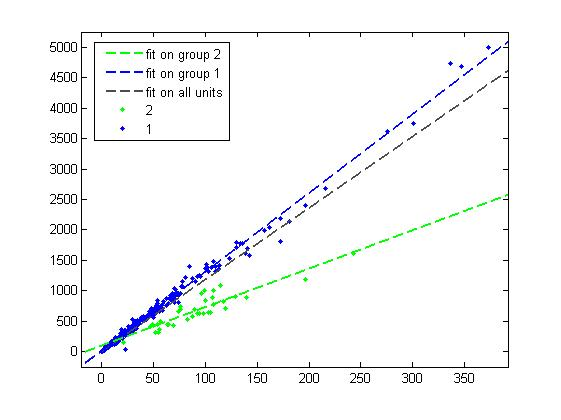
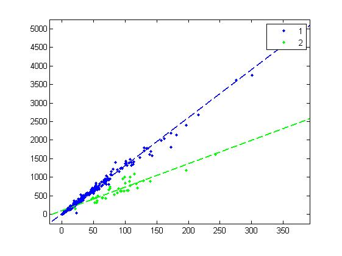
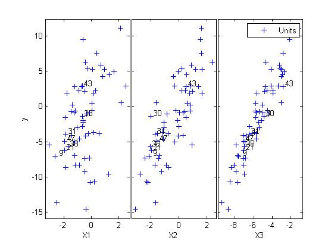
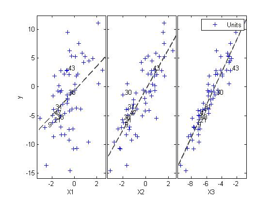

| Flexible Statistics Data Analysis Toolbox™ |
|
Superimpose least-squares fit lines to the data groups of a gplotmatrix.
olsline()
h = olsline(i)
olsline fits a least-squares line to the data or the groups of a given gplotmatrix panel. The panel where to add the line(s) can be chosen by setting the 'CurrentAxes' property to the axis handle of the panel. For example this sets the first gplotmatrix panel:
[H,AX,BigAx]=gplotmatrix(X,y,group); set(gcf,'CurrentAxes',AX(1);
|
Note olsline extends the MATLAB function lsline. It works well with yXplot, being based on gplotmatrix. |
olsline can be called without arguments or with a single argument, which can be 0 or an integer between 1 and the number of groups in a panel of the plot concerned.
h = olsline returns in h the handle to the superimposed line object(s).
% load a bivariate dataset
load fishery;
y = fishery.data(:,2);
X = fishery.data(:,1);
% the dataset is formed by two clear groups of units (vector group)
group=ones(677,1); group(181:216)=2;
% plot the data
[H,AX,BigAx]=gplotmatrix(X,y,group);
% and ensure that olsline will act on the figure just generated
set(gcf,'CurrentAxes',AX);

% fit a line to all data
h=olsline;
% use the handle h returned by olsline to set a text for the legenda
set(h,'DisplayName','fit on all units');
% and update the legenda
hLines = findobj(gca, 'type', 'line');
legend(hLines);

% fit a line to the first subgroup
h=olsline(size(H,3));
set(h,'DisplayName','fit on group 1');
% and now fit a line to the second subgroup
h=olsline(size(H,2));
set(h,'DisplayName','fit on group 2');
% To conclude, update the legenda again
hLines = findobj(gca, 'type', 'line');
legend(hLines);

h=olsline(0);

% load the multiple regression dataset % and extract the dependent and independent variables load multiple_regression y = multiple_regression.data(:,4); X = multiple_regression.data(:,1:3); % choose an initial subset and run the FS [out]=LXS(y,X,'nsamp',1000); [out]=FSReda(y,X,out.bs); % the yXplot is generated with all standard options hfig = yXplot(out);

% get the children of the yXplot figure hChildren = get(hfig,'Children'); nhChildren = numel(hChildren); % and extract in the AX vector the handles of the yXplot axes AX = hChildren; AX([1 nhChildren])=[]; nAX = numel(AX); % now superimpose the least square line to the nAX panels of yXplot for i=1:nAX set(hfig ,'CurrentAxes',AX(i)); olsline; end;

|
|
normboxcox.html | optbdp.html |
|